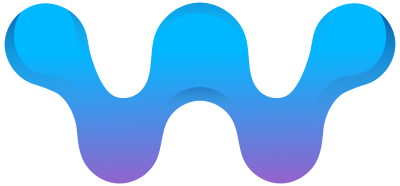
Wergonic is a smart-workwear system for fast, accurate measurement of upper-body posture and motion during real work tasks — with results compared directly against recommended reference values.
The Wergonic Smart Workwear is delivered as a standardised kit.
Use an Android phone on Android 13 or newer. Bluetooth hardware quality affects streaming. Tested models:
Compliance: CE, FCC, IC · Bluetooth 4.0/5.0 · RoHS, REACH.
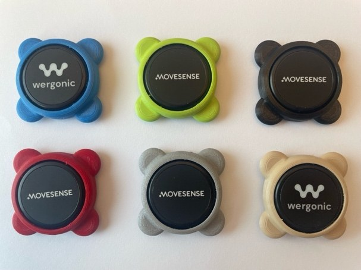
The system uses six Movesense inertial measurement units (IMUs), held in colour-coded moulds for correct placement.
| Body part | Colour | Placement |
|---|---|---|
| Head | Black | Centre of the forehead, held by the headband. |
| Trunk | Green | Upper back, at the base of the neck (cervical/thoracic junction), in the shirt's back pocket. |
| Right arm | Blue | Outer side of the right upper arm, over the deltoid, in the shirt's sleeve pocket. |
| Left arm | Red | Outer side of the left upper arm, over the deltoid, in the shirt's sleeve pocket. |
| Hand | Silver | Back of the dominant hand, in the glove's hand pocket. |
| Forearm | Beige | Dominant forearm, just above the wrist, in the glove's lower pocket. |
All angles are inclinations measured against a vertical reference set during calibration. All speeds are angular velocity — how fast the body part moves, in degrees per second.
| Body part | Angles (°) | Speed of movement (°/s) |
|---|---|---|
| Head | Forward/backward bending · Side bending | Not reported |
| Trunk | Forward bending · Side bending | Not reported |
| Right arm Left arm |
Elevation of the upper arm (all shoulder movements, relative to vertical) · Forward bending · Side bending | Arm angular velocity |
| Forearm | Elevation of the forearm — used together with the upper-arm angle to estimate how far the hand reaches from the body | Feeds the wrist result below |
| Hand | — | Hand-transmitted vibration exposure |
| Wrist (calculated) | Not reported as an angle | Wrist angular velocity — how fast the hand moves relative to the forearm, from the Hand and Forearm sensors together |
| Heart rate (optional band) | — | Heart rate, and time spent above 33% of heart-rate reserve |
Live tiles vs report. During recording, head, trunk and arm side bending and arm forward bending are shown as extra tiles — switch them on with Show extra tiles in Settings. The full report is covered in chapter 6, and the recommended limits for each quantity in chapter 7.
Use the provided phone (mostly pre-configured) or your own Android phone. Either way, finish by setting up your Work Library on the dashboard.
The kit phone already has the correct Android version, the latest Wergonic App and pre-paired IMUs. Two steps remain:
Resetting the phone to factory settings is optional. If you do, follow the "own phone" steps below afterwards.
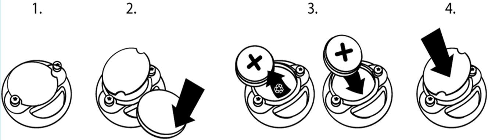
Open Settings (gear icon, top-right of the home screen) and go to Sensors & Hardware. Each body part has a Pair button; tap it and pick the sensor from the list. Identify a sensor by the last four digits of the serial number on its back. Once connected, the row shows Paired in cyan with battery level and an Unpair option.
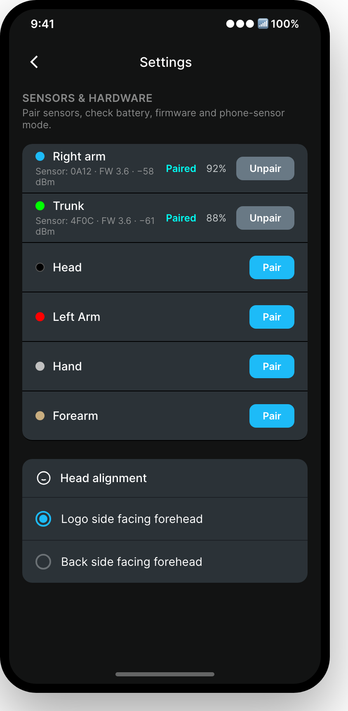
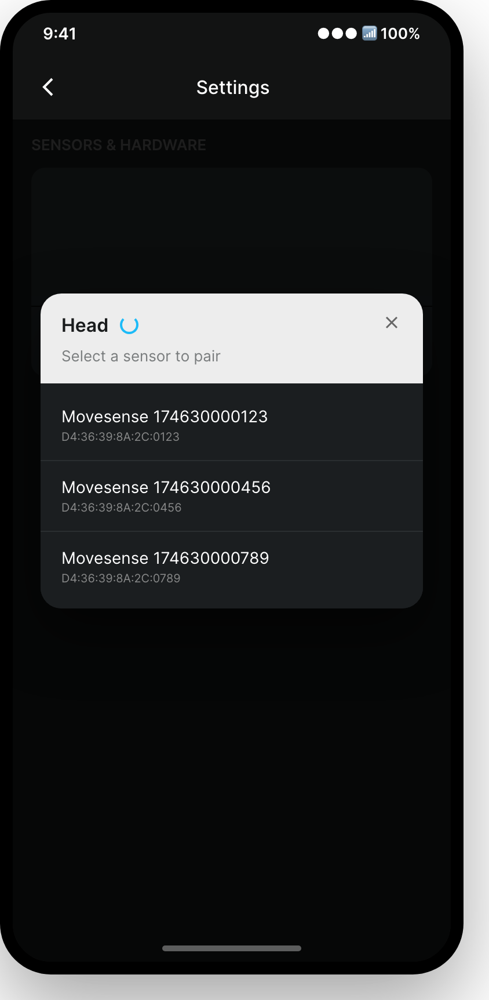
Colour-code standard — Head Black · Trunk Green · Right arm Blue · Left arm Red · Hand Silver · Forearm Beige. The optional HR chest band pairs with the mould-free sensor.
Sign in at cloud.wergonic.com. In the left menu, under Setup, open Work Library. This is where you prepare everything the app offers you during a measurement. The page has three tabs:
| Tab | What it holds |
|---|---|
| Work Cycles | Your factories and the work they contain, as a tree: Factory → Line → Workstation → Operator → Work cycle → Tasks. Each task has a name, an optional description and a duration in seconds. Required when you measure a work cycle. |
| Activities | Activity groups and the activities inside them. These are the buttons you tap during a free recording to mark what the worker is doing. Optional, and only available when the phone is online. |
| Conditions | Condition groups and their values — the circumstances you want to tag a measurement with (single-choice or multiple-choice). Optional. |
Adding work cycles. On the Work Cycles tab use Add factory to build the tree by hand, then add lines, workstations, operators, work cycles and tasks step by step. To load many at once, prepare them in Excel and use Import CSV/Excel.
Adding activities and conditions. On the Activities or Conditions tab, first create a group, then add items to it. Items can later be renamed, merged into another item, or retired.
Insert batteries and confirm each IMU shows a red blinking light. Unless stated otherwise, fit each sensor with the Movesense logo facing outward and upright:
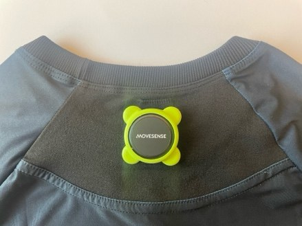
On the home screen tap New measurement, then complete the two setup pages and confirm pairing before calibration.
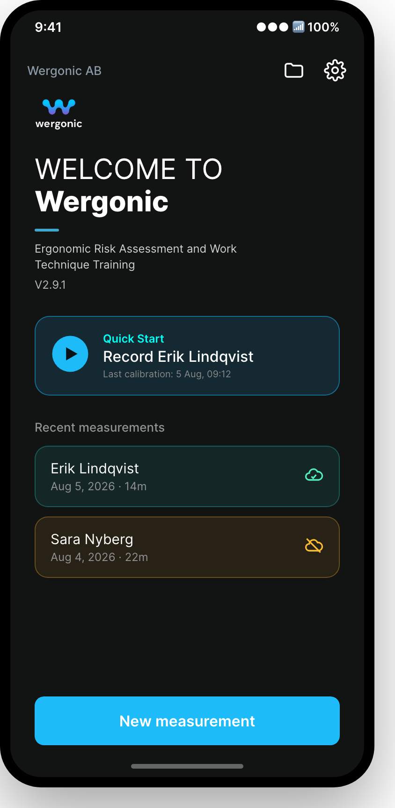
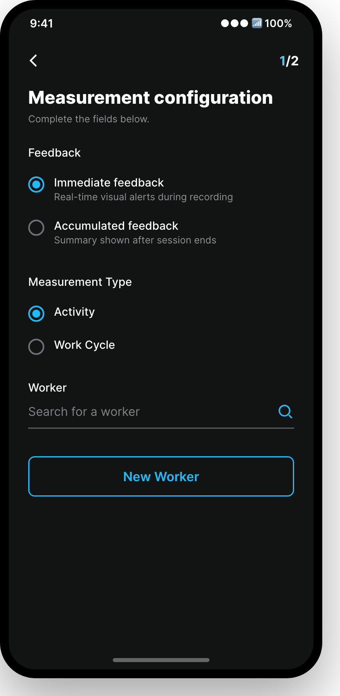
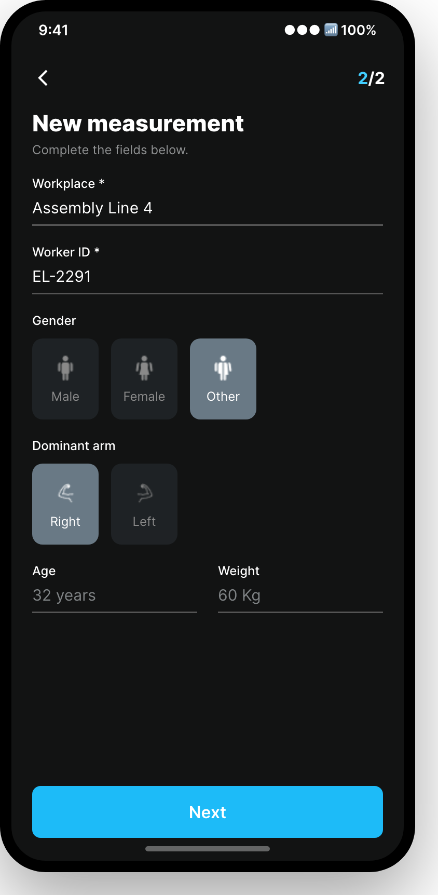
They answer two different questions. You set both, in any combination.
| Setting | Option | What it does |
|---|---|---|
| Feedback How the worker is warned during the recording |
Immediate feedback | Real-time alerts the moment a limit is passed — the metric square turns orange or red, and vibration or voice cues fire if you enabled them in Settings. Use this for work-technique training. |
| Accumulated feedback | No alerts while working. The worker is left undisturbed and gets a summary once the measurement ends. Use this when you want to record normal work without influencing it. | |
| Measurement Type How the work is logged |
Activity | Record freely and log activities as they happen. Nothing is planned in advance — you tap the activity being done now, and the previous one ends automatically. |
| Work Cycle | Follow a predefined task list for a station. Pick factory, line, workstation, operator and model first, then step through the tasks manually or let the app advance them automatically. Requires a work cycle prepared in the Work Library, and an online phone. |
The Pairing screen shows the shirt with each body part. Paired sensors show a cyan check; tap a body part to pair, or tap a paired one to unpair. When ready, tap Next (top-right) to calibrate.
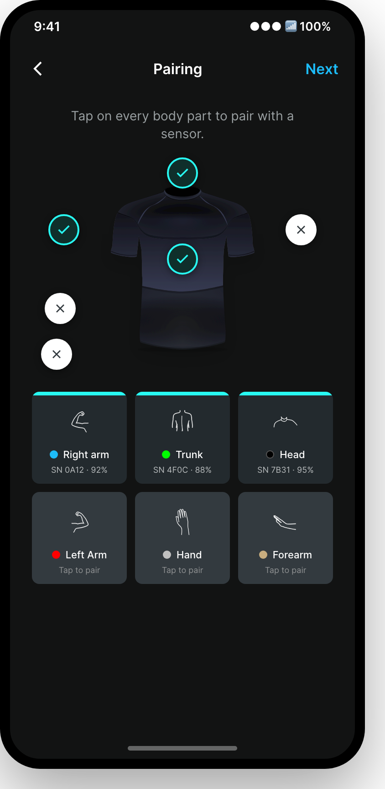
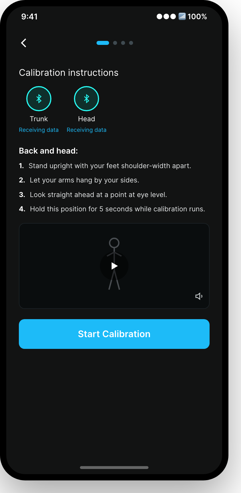
Calibration is done per test person, in four steps — Back and head, Right arm, Left arm, and a Forward reference. Each step gives text, a demo video (with audio) and voice cues; the arm steps use the ~2 kg weight. Calibration is saved on the phone and can be reused for consecutive measurements on the same person if the IMUs have not moved — otherwise recalibrate.
After calibration you enter live mode. Metric squares update in real time and colour by risk — green (safe), orange, red.
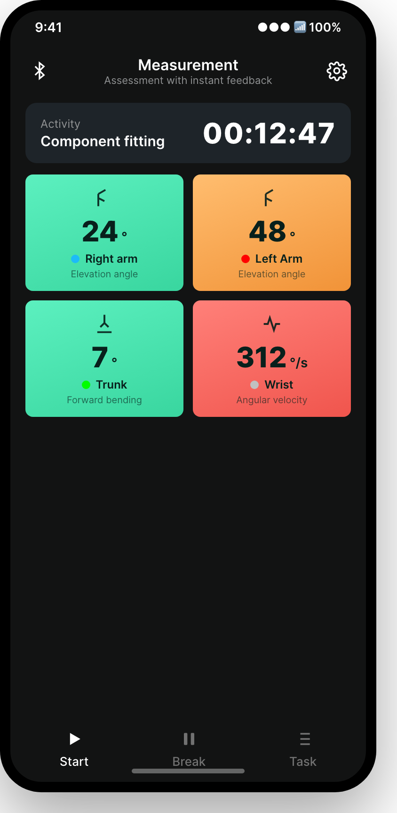
Review a measurement directly in the app, or in full on the web dashboard.
Tap the folder icon (home, top-right) to open your measurements. On a measurement, tap the ⋮ menu → Report. The report opens as swipeable pages — one per body part — with the numbers in tables. Recommended limits are shown in blue next to your result; all of them are listed in chapter 7.
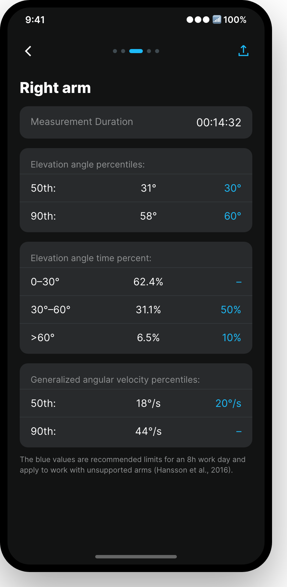
Online measurements upload automatically; offline ones upload when you reconnect (may take a few minutes). Sign in at cloud.wergonic.com and open Measurements in the left menu. The table lists every measurement with its worker, recorded body parts, duration, start time, risk assessments and status. Click a finished measurement to open its details.
Results are shown as:
The row menu on each measurement also offers Run risk assessment, Generate report, Export raw data and Archive. Select several measurements to compare them or build a combined report.
These are the recommended limits the app shows in blue beside your results. They apply to a full 8-hour working day. Exceeding one is not a diagnosis — it is a signal that the exposure should be reduced.
| Body part | Quantity | Recommended limit | Source |
|---|---|---|---|
| Arms (unsupported) | Elevation angle — 50th percentile | ≤ 30° | Hansson et al., 2016 |
| Elevation angle — 90th percentile | ≤ 60° | ||
| Angular velocity — 50th percentile | ≤ 30 °/s | Arvidsson et al., 2017 | |
| Trunk | Forward bending — 50th percentile | ≤ 20° | Hansson et al., 2016 |
| Side bending — 50th percentile | ≤ 20° | ||
| Head | Side bending — 50th percentile | ≤ 20° | Hansson et al., 2016 |
| Wrist | Angular velocity — 50th percentile | ≤ 20 °/s ≤ 15 °/s if the work is also assessed as force-demanding | Arvidsson et al., 2017 |
| Heart rate (optional band) | Accumulated time above 33% of heart-rate reserve (HRR) | Keep as low as possible | — |
The report also shows how much of the time was spent in each band. The lowest band starts at the calibrated upright posture and includes a small backward margin, so a slight lean backwards is still counted as neutral.
| Quantity | Bands reported |
|---|---|
| Trunk — forward bending | 10°–20° · 20°–45° · > 45° |
| Trunk — side bending | 0°–10° · 10°–30° · > 30° |
| Head — forward bending | 10°–20° · 20°–30° · > 30° |
| Arm — elevation | 0°–30° · 30°–60° · > 60° |
Trunk bands follow the thresholds used in the RAMP tool (Lind et al., 2020).
These are the sources cited in short form inside the mobile app.
| Problem | What to do |
|---|---|
| IMU won't blink / seems off | Moist fingers can discharge coin cells. Try a fresh battery; if it still won't start, contact Wergonic for a replacement. |
| IMU is slow to pair | Start the IMU before opening the app and wait ~1 minute. Don't repeatedly tap pair/unpair. Try another location — some environments disturb Bluetooth. |
| Battery lid won't open | Use only CR2025, inserted the right way up. Never use CR2032 — it can jam and damage the lid. |
| App stuck loading after calibration | Usually an offline network search. Enable flight mode with Bluetooth on, or work online for best stability. |
| No wrist result in the report | The Hand and Forearm sensors work as a pair. If only one of them was connected, no wrist value can be calculated. |
Do I need to be online to measure?
No — only Bluetooth is required. Data is stored on the phone and uploads when you're back online. Online mode is more stable and is recommended.
How far does Bluetooth reach?
Roughly 10 metres, but range depends on the environment where you measure.
Does the system measure rotation?
No. It measures inclination angles against vertical and speed of movement. Twisting of the trunk, head or upper arm is not measured — see chapter 3.2.
Why does the app say "Forearm" but the report says "Wrist"?
Because they are two different things. The beige sensor sits on the forearm and is called Forearm everywhere it is set up. There is no wrist sensor — the wrist figure is calculated from the Hand and Forearm sensors together. See chapter 3.1.
Where exactly does the head sensor go?
In the centre of the forehead, held by the headband — not over the ear. See chapter 5.2.